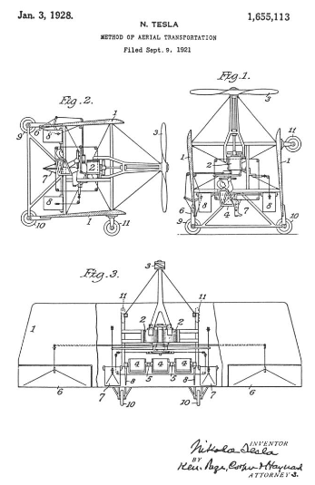

Descarga la patente original en esté enlace


La utilidad del avión como medio de transporte se reduce sustancialmente y su introducción comercial se ve muy obstaculizada debido a la incapacidad inherente del mecanismo para levantarse y descender fácilmente, lo cual es una consecuencia inevitable del hecho de que la fuerza de elevación requerida solo puede producirse. por un movimiento de traslación más o menos rápido de los planos o láminas. En la experiencia real, la velocidad mínima para la ascensión y el aterrizaje es una fracción considerable de la de pleno vuelo, y los principios de diseño no admiten un avance muy grande a este respecto sin sacrificar alguna característica deseable. Por esta razón, aviones de gran superficie, secciones de ala de gran sustentación, deflectores de la corriente de deslizamiento de la hélice o medios análogos, que podrían ser útiles en estas operaciones, no proporcionan el remedio buscado. Esta indispensable alta velocidad, que pone en peligro la vida y la propiedad, hace necesario dotar a la máquina de aparatos especiales y dotar de instalaciones adecuadas en los terminales de la ruta, todo lo cual conlleva numerosos inconvenientes y dificultades de gravedad. Se ha vuelto tan imperativo idear algún plan para eliminar estas limitaciones del avión que el consenso de la opinión de los expertos caracteriza el problema como uno de los más urgentes e importantes y su solución práctica es esperada con impaciencia por quienes se dedican al desarrollo del arte, así como el público en general.
En este sentido se han realizado muchos intentos, en su mayoría basados en el uso de dispositivos independientes con el propósito expreso de facilitar y asegurar el inicio y el final del viaje aéreo, pero la operatividad de los arreglos propuestos no está demostrada de manera concluyente y, además, son objetables, constructivamente o de otro modo, hasta el punto de que los constructores de aparatos comerciales hasta ahora no los han considerado de valor suficiente para apartarse de la práctica actual.
Más recientemente, la atención profesional se ha centrado en el helicóptero que carece de aviones como órganos de apoyo distintos y, presumiblemente, permite que la propulsión tanto vertical como horizontal se lleve a cabo satisfactoriamente mediante la instrumentalidad de la hélice únicamente. Sin embargo, aunque esta idea es bastante antigua y no pocos expertos se han esforzado por llevarla a cabo de diversas formas, todavía no se ha logrado ningún éxito. Evidentemente, esto se debe a la insuficiencia de los motores empleados y, quizás, también a ciertas características hasta ahora insospechadas del dispositivo y falacias en la teoría aceptada de su funcionamiento, cuya elucidación se considera necesaria para la clara comprensión del tema.
Las perspectivas de una máquina voladora de este tipo parecen a primera vista atractivas, principalmente porque hace posible el transporte de grandes cargas con un gasto de energía relativamente pequeño. Esto se deriva directamente de las leyes fundamentales de la propulsión de fluidos, establecidas por WTM Rankine hace más de cincuenta años, según las cuales el empuje es igual a la suma integral de los productos de las masas y velocidades de las partículas de aire proyectadas; expresado simbólicamente.
T = Σ(mv).
Por otro lado, la energía cinética del aire puesto en movimiento es
T = Σ (½mv^2)
A partir de estas ecuaciones, es evidente que se puede obtener un gran empuje con una cantidad de potencia comparativamente pequeña simplemente aumentando la masa agregada de las partículas y reduciendo sus velocidades. Tomando como ejemplo un caso especial, si el empuje en condiciones dadas es de diez libras por caballo de fuerza, entonces un aumento de cien veces de la masa de aire, acompañado de una reducción de su velocidad efectiva a una décima parte, produciría una fuerza de uno. cien libras por caballo de fuerza. Pero la aparentemente gran ganancia así obtenida es de poca importancia en la aviación, por la razón de que una alta velocidad de viaje es generalmente un requisito esencial que no se puede cumplir excepto impulsando el aire a alta velocidad, y eso obviamente implica un empuje relativamente pequeño.
Otra cualidad comúnmente atribuida al helicóptero es la gran estabilidad, siendo ésta, aparentemente, una inferencia lógica a juzgar por la ubicación de los centros de gravedad y presión. Sin embargo, se encontrará que, contrariamente a esta opinión predominante, el dispositivo, mientras se mueve en cualquier dirección que no sea hacia arriba o hacia abajo, se encuentra en un equilibrio fácilmente perturbado y tiene, además, una pronunciada tendencia a oscilar. Es cierto, por supuesto, que cuando el eje de la hélice es vertical y el aire ambiente está en reposo, la máquina es estable hasta cierto punto, pero si se inclina aunque sea levemente, o si el medio se agita, ya no es así.
Para explicar esta y otras peculiaridades, suponga que el helicóptero se encuentra en el aire quieto a una cierta altura, el empuje axial T es igual al peso, y deje que el eje de la hélice se incline para formar un ángulo a con la horizontal. El cambio a la nueva posición tendrá un doble efecto: el empuje vertical disminuirá a
T_v = T sen(a)
y al mismo tiempo se producirá un empuje horizontal
T_h = T cos(a)
Bajo la acción de la fuerza de gravedad desequilibrada, la máquina ahora caerá a lo largo de una curva hasta un nivel inferior y si la inclinación de la hélice y su velocidad de rotación permanecen inalteradas durante el descenso, las fuerzas T, T_v y T_h aumentará continuamente en proporción a la densidad del aire hasta que la componente vertical T v del empuje axial T sea igual a la atracción gravitacional. La extensión de la caída estará gobernada por la inclinación del eje de la hélice y para un ángulo dado será, teóricamente, el mismo sin importar a qué altitud ocurran los eventos. Para tener una idea de su magnitud, suponga que las elevaciones de los estratos superior e inferior medidas desde el nivel del mar son h_1 , y h_2 , respectivamente, d_1 y d_2 las densidades de aire correspondientes y H = 26,700 pies la altura de la "atmósfera uniforme", entonces, como consecuencia de la ley de Boyle, la relación existirá
h_1 - h_2 = H log d_2 / ed_1
Es evidente que
T/T_v = T/T sen(a) = 1/sen(a) debe ser igual a d_2/d_1
para que la componente vertical del empuje axial en el estrato inferior solo soporte el peso. Por lo tanto
h_1 - h_2 = H log(1)/sen(a)
Tomando, en un caso especial, el ángulo a = 60 °, entonces
1/sen a = 1/0,866 = 1,1547
y
h_1 - h_2 = 26700xlog(1), 1547 = 3840 pies.
En realidad la caída será mucho mayor para la máquina, al llegar a la capa inferior con una alta velocidad con relación al medio, será empujada hacia abajo por la trayectoria curva y la energía cinética, en sentido vertical, la poseerá la masa en movimiento. debe ser aniquilado antes de que la caída se detenga en un estrato de aire aún más denso. En este punto, el empuje hacia arriba será muy superior al tirón opuesto del peso y el aparato se elevará primero aumentando y luego disminuyendo la velocidad hasta una altura que puede aproximarse a la original. Desde allí volverá a caer y así sucesivamente, repitiéndose estas operaciones durante el vuelo hacia adelante, disminuyendo gradualmente en magnitud las excursiones de subida y bajada desde la línea horizontal principal. Después de un lapso de tiempo, determinado por numerosas influencias, las excursiones deben cesar por completo y el camino descrito se vuelve rectilíneo. Pero esto es casi imposible, como se puede demostrar fácilmente al señalar otra característica curiosa del helicóptero.
En lo que antecede, se suponía que el eje de la hélice se movía siempre paralelo a sí mismo, cuyo resultado podría lograrse mediante el uso de un alerón ajustable. A este respecto, cabe señalar, sin embargo, que tal dispositivo no actuará a la manera de un timón, entrando en pleno juego sólo a intervalos y realizando sus funciones de forma económica, sino que absorberá constantemente energía, ocasionando así un considerable desperdicio de energía. fuerza motriz y añadiendo otra a las muchas desventajas del helicóptero.
Dejemos ahora que la máquina posea un cierto grado de libertad, como será el caso normalmente, y observe en primer lugar que las propias palas de la hélice constituyen planos que desarrollan un empuje de reacción, siendo la presión sobre la pala delantera inferior mayor que el ejercido sobre el superior debido a la compresión del aire por el cuerpo de la máquina y aumento de densidad en esa región. Este empuje, que tiende a disminuir el ángulo un, variará obviamente durante una revolución, siendo máxima en una posición en la que la línea de simetría de las dos palas de la hélice y la de vuelo estén en un plano vertical y mínima en ángulo recto con ella. Sin embargo, cuando la velocidad horizontal es grande, puede ser considerable y suficiente para superar rápidamente la inercia y las resistencias giroscópicas con mayor facilidad, ya que la pala superior, que está situada en una región donde las condiciones son más cercanas a las normales, opera con el mismo efecto. . Además, este efecto perturbador participa de la cualidad regenerativa, la fuerza aumenta a medida que el ángulo disminuye hasta un máximo durante un= 45 °. A medida que el eje se inclina más y más, el esfuerzo de sustentación vertical de la hélice disminuirá en consecuencia y la máquina caerá con una velocidad que aumenta rápidamente, superando finalmente la horizontal cuando la reacción de las palas se dirigirá hacia arriba para aumentar el ángulo. una y de ese modo hacer que la máquina se eleva más alto. Así, se establecerán oscilaciones periódicas acompañadas de ascensos y descensos, que bien pueden magnificarse hasta el punto de provocar un vuelco completo y hundimiento a tierra.
Algunos expertos sostienen que el helicóptero, debido a su menor resistencia corporal, podría alcanzar una velocidad mayor que el aerófano. Pero esta es una conclusión errónea, contraria a las leyes de propulsión. Hay que tener en cuenta que en el primer tipo, siendo la misma la fuerza motriz, se debe poner en movimiento una mayor masa de aire con una velocidad menor que en el segundo, por lo que debe ser inferior en velocidad. Pero incluso si el aire fuera propulsado en la dirección del eje del tornillo con la misma velocidad V en ambos, mientras que el avión puede aproximarse a lo mismo, el helicóptero nunca podría superar la componente horizontal V cos a . Para ser explícito, imagine que la corriente de aire fluye con la velocidad V a lo largo del eje de la hélice inclinada para formar un ángulo aCon la horizontal, ser reemplazada por dos corrientes una vertical y otra horizontal de velocidades respectivamente iguales a V sen a y V cos a , será evidente que un helicóptero en su vuelo hacia adelante solo podría aproximarse y nunca igualar la velocidad V cos a de la corriente de aire horizontal por mucho que se reduzca la resistencia ya que, de acuerdo con una ley fundamental de propulsión, el empuje sería nulo a esa velocidad. La mayor eficiencia debe obtenerse con la máquina funcionando a una velocidad de ½ V cos a, pero la utilización más económica de la energía se efectuaría cuando un= 45 °, en cuyo caso las velocidades de las corrientes horizontal y vertical serán de 0,7 V. De esto se puede inferir que, teóricamente, se podría obtener el mejor rendimiento al impulsar el helicóptero hacia adelante con una velocidad más o menos aproximada a 0,35 V pero los resultados obtenidos en la práctica serán necesariamente muy inferiores porque sin disposiciones especiales como las aquí expuestas, el dispositivo, como se señaló anteriormente, se hundiría y dispararía en sucesión, al mismo tiempo ejecutando oscilaciones más pequeñas, cuyos movimientos retardarían su vuelo y consumen una parte considerable de la energía motriz tanto más cuanto que las pérdidas incidentes a los medios de control se incrementarán correspondientemente.
Otro defecto muy grave de este tipo de máquina voladora, desde el punto de vista práctico, se encuentra en su incapacidad para sostenerse en el aire en caso de avería del motor, siendo el área proyectada de las palas de la hélice inadecuada para reducir la velocidad de la caída lo suficiente para evitar el desastre, y esto es un impedimento casi fatal para su uso comercial.
<ṕ>De los hechos anteriores, que se ignoran en las publicaciones técnicas sobre el tema, se verá claramente que la solución exitosa del problema va en una dirección diferente.
Mi invención satisface la necesidad actual de una manera simple sin un cambio radical en la construcción y el sacrificio de características valiosas, asegurando de paso ventajas que deberían resultar muy beneficiosas en el desarrollo posterior de la técnica. En términos generales, consiste en un novedoso método de transporte de cuerpos por el aire según el cual la máquina se eleva y se baja únicamente mediante la hélice y se sostiene en vuelo lateral por aviones. Para lograr esto, es necesario un motor primario ligero y poderoso y particularmente adecuado para el propósito, empleo, preferiblemente, una turbina del tipo descrito en mi Patente de Estados Unidos No. 1.061.206, del 6 de mayo de 1913, que no solo cumple estos requisitos, pero está especialmente adaptado al funcionamiento a alta temperatura. También hago arreglos por los cuales la máquina voladora puede ser.
El conocimiento completo de estas mejoras se obtendrá fácilmente con referencia a los dibujos adjuntos en los que la figura 1 ilustra la máquina en la posición de partida o de aterrizaje y la figura 2, en vuelo horizontal. La figura 3 es una vista en planta del mismo con el plano superior parcialmente cortado.
La estructura está compuesta por dos planos o láminas 1, 1 unidos rígidamente. Su longitud y distancia pueden ser tales que formen casi un cuadrado en aras de la pequeñez y la compacidad. Con el mismo objeto se omite la cola o, si se usa, es retráctil. Los motores 2, 2 en este caso turbinas del tipo descrito en mi patente antes mencionada y otras partes del aparato motor se colocan teniendo debidamente en cuenta los centros de gravedad y presión y se proporcionan los medios de control habituales. Además de estos, la máquina puede incorporar cualquiera de los dispositivos estabilizadores conocidos. En reposo, los planos son verticales, o casi, y también el eje que impulsa la hélice 3, que está construido con una fuerza, tamaño y paso que le permitirán elevar todo el peso con los motores funcionando a una velocidad aún mayor que cuando se impulsa la máquina horizontalmente. La potencia se transmite al eje desde las turbinas a través de engranajes adecuados. Los asientos 4, 4, 4 para el operador y los pasajeros están suspendidos sobre muñones 5, 5 en los que pueden girar en un ángulo de aproximadamente 90 °, empleándose resortes y cojines (no mostrados) para asegurar y limitar su movimiento a través de este ángulo. . Los dispositivos habituales de control lateral y direccional, 6, 6, 7, 7 y 8, 8 están provistos de conexiones mecánicas que permiten al operador accionar los dispositivos con la mano o el pie desde su asiento en cualquier posición. Al principio, se enciende suficiente energía por los medios adecuados, también a su alcance, la máquina se eleva verticalmente en el aire a la altura deseada cuando se inclina gradualmente manipulando los dispositivos elevadores y avanza como un avión, la carga se transfiere desde la hélice a las láminas a medida que disminuye el ángulo de inclinación y aumenta la velocidad en dirección horizontal . De lo anterior se entenderá que, simultáneamente con la inclinación de la máquina, el operador aumentará el empuje de la hélice para compensar la reducción de la fuerza de sostenimiento que se deriva inevitablemente de la disminución del ángulo.uny antes de que la reacción de los aviones entre en pleno efecto. Evitará así una caída hacia abajo y la producción de oscilaciones peligrosas que se han mencionado anteriormente, y mediante la manipulación adecuada del aparato y la reducción gradual de la potencia desarrollada por el motor principal, a medida que se gana velocidad de avance y los aviones se elevan. carga, puede hacer que la máquina avance horizontalmente a lo largo de una línea recta sensiblemente, condición esencial para la consecución de los mejores resultados prácticos. En el descenso se reduce la velocidad de avance y se vuelve a enderezar la máquina, actuando como un helicóptero con la hélice soportando toda la carga. Obviamente, como el dispositivo se ralentiza y se endereza haciendo que los aviones pierdan parte o todos sus esfuerzos de sostenimiento, el operador aplicará más potencia a la hélice aumentando así el empuje a la magnitud requerida y en todas estas operaciones de arranque y carga, así como de inclinación para regular la altura, cumplir con las condiciones del aire o para otros fines, será su objeto modificar la hélice empuja aproximadamente en la misma medida que la reacción variable de los aviones puede exigir para que la fuerza de elevación sea sensiblemente constante. Evidentemente, también, siempre que sea necesario o deseable, se puede aplicar una potencia muy superior a la normalmente requerida durante el vuelo y propulsar la máquina a una velocidad mucho mayor. El tipo de turbina utilizada es un motor de gran ligereza y actividad y se presta excepcionalmente a este tipo de trabajos para los que los motores de aviación ordinarios no son adecuados. Es capaz de soportar una gran sobrecarga y funcionar sin peligro a una velocidad excesiva, de modo que durante las operaciones de arranque y aterrizaje los motores pueden desarrollar la potencia necesaria aunque de forma menos eficiente que en sus condiciones normales de trabajo. Se pueden proporcionar medios especiales de control, si es necesario, para aumentar el suministro de energía en estas operaciones. Debido a su extrema simplicidad, el aparato motriz es confiable en su funcionamiento, pero si la potencia se interrumpe accidentalmente, el aterrizaje aún puede efectuarse fácilmente mediante un volplaning. Para ello, además de las ruedas 9, 9 y 10, se emplean 10 ruedas 11, 11, estando este último montado en el extremo delantero debajo del plano inferior y de modo que cuando la máquina descanse sobre terreno nivelado, el eje de la hélice tenga la inclinación deseada que se considere mejor para elevarse a la manera de un avión. Un avión de este tipo, construido y operado como se describe, reúne las ventajas de ambos tipos y parece satisfacer mejor los requisitos de una máquina pequeña, compacta, extremadamente rápida y, sin embargo, muy segura para uso comercial. Se obtienen resultados prácticos especialmente buenos mediante el uso de mi turbina, de la que se puede confiar para desarrollar la energía necesaria para la elevación, aunque sea considerablemente mayor que la consumida en vuelo en condiciones normales. Este fin se puede lograr convenientemente suministrando temporalmente más fluido de trabajo al rotor y conduciéndolo más rápido. o haciéndolo funcionar aproximadamente a la misma velocidad y aumentando el esfuerzo mediante el ajuste del paso de la hélice, u otros medios conocidos en la técnica. Este último debe diseñarse para funcionar de la manera más económica durante el vuelo, ya que su eficiencia en las operaciones de arranque y aterrizaje es de importancia relativamente pequeña. En lugar de un solo tornillo grande, como se describe, se pueden utilizar varios más pequeños, en cuyo caso se puede prescindir del engranaje. El biplano parece ser el más adecuado para el propósito principal contemplado, pero la invención es aplicable a monoplanos y otros tipos. En lugar de un solo tornillo grande, como se describe, se pueden utilizar varios más pequeños, en cuyo caso se puede prescindir del engranaje. El biplano parece ser el más adecuado para el propósito principal contemplado, pero la invención es aplicable a monoplanos y otros tipos. En lugar de un solo tornillo grande, como se describe, se pueden utilizar varios más pequeños, en cuyo caso se puede prescindir del engranaje. El biplano parece ser el más adecuado para el propósito principal contemplado, pero la invención es aplicable a monoplanos y otros tipos.
En resumen, el tipo de helicóptero de máquina voladora, especialmente con un gran ángulo de inclinación del eje de la hélice con respecto a la horizontal, en el que generalmente se espera que opere, es bastante inadecuado para un transporte aéreo rápido; es incapaz de avanzar horizontalmente a lo largo de una línea recta en las condiciones de aire predominantes; está sometido a peligrosos hundimientos y oscilaciones y, lo que es más importante desde el punto de vista comercial y práctico, es casi seguro que está condenado a la destrucción en caso de que la fuerza motriz ceda. Estos inconvenientes y defectos se superan mediante los métodos y aparatos que he descrito a través de los cuales se puede realizar un nuevo tipo de máquina voladora que posee todas las ventajas de que el helicóptero es al mismo tiempo seguro y capaz de alcanzar una velocidad igual o incluso superior a esa. del avión actual.
Que yo sepa, se han propuesto varias formas de aviones con el objeto de lograr resultados similares, pero un estudio cuidadoso muestra que ninguno de ellos es capaz de las acciones como las aquí contempladas por falta de métodos de operación adecuados así como de aparatos adecuados.
No reivindico aquí el aparato por medio del cual este método es o puede llevarse a cabo en la forma especial ilustrada o en modificaciones del mismo, ya que éste es el tema de una solicitud separada.
Lo que deseo asegurar con Letters Patent es:
Fechado el día 3 de Enero de 1928. .
Nikola Tesla.